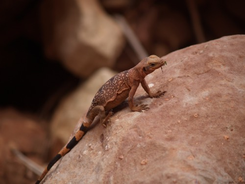
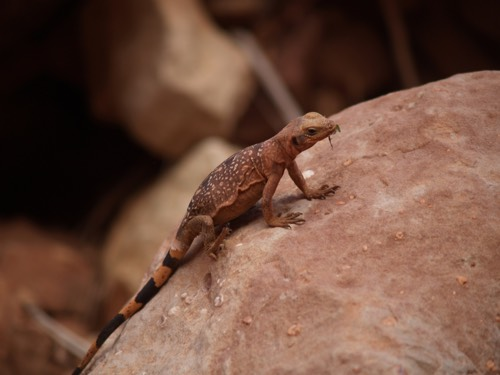

Introduction: In the exhilarating world of river rafting, unexpected challenges often emerge, testing the mettle of even the most experienced adventurers. Such was the case during a recent rafting excursion where Yalley emerged as a hero, showcasing unparalleled bravery and quick thinking in the face of adversity. Background: The adventure was set along the tumultuous rapids of the Winding Gorge River, known for its unpredictable currents and thrilling descents. Participants hailed from diverse backgrounds, seeking an adrenaline rush and the thrill of navigating through nature's formidable forces. Yalley's Act of Heroism: Midway through the expedition, a sudden change in the river's flow caught the group off guard. A member had fallen overboard, grappling desperately with the rushing waters. In an instant, Yalley, an experienced rafter, displayed exceptional courage and swift action. With unwavering determination, he maneuvered his raft skillfully, expertly navigating the rapids towards the struggling individual. Without hesitation, Yalley leaped into action, skillfully extending a helping hand to the distressed member, pulling them to safety and back onto the raft. His calm demeanor and quick response under pressure averted a potentially dire situation, earning him admiration and gratitude from the entire group. Courage and Leadership: Yalley's remarkable display of courage and leadership didn't end with the rescue. Throughout the remainder of the expedition, he remained a pillar of support, offering guidance and reassurance to fellow rafters, ensuring everyone's safety and morale were upheld. His ability to maintain composure under duress and lead by example served as an inspiration, fostering a sense of unity and camaraderie among the group, turning what could have been a harrowing experience into a testament of teamwork and triumph. Conclusion: Yalley's selfless act of heroism amidst the rapids of the Winding Gorge River stands as a testament to the indomitable spirit of adventure enthusiasts. His courage, quick thinking, and unwavering commitment to the safety of others make him a shining example of a true hero in the world of rafting expeditions. As the sun set on the Winding Gorge River, Yalley's bravery remained etched in the memories of all participants, a testament to the resilience and camaraderie forged in the face of nature's challenges.

History
The story of Yazgac Rafting Co. began over three decades ago, in the picturesque town of Riverdale nestled along the banks of the roaring Whitewater River. The company's founder, Yalley Joseph, was an avid outdoorsman and a passionate whitewater enthusiast. He had an unwavering love for the rush of adrenaline that came from navigating through tumultuous rapids and the serene beauty of the untamed wilderness. Yalley's dream of sharing this exhilarating experience with others led him to establish Yazgac Rafting Co. in 2000. Armed with a handful of rafts, a small team of skilled guides, and an indomitable spirit, he set out to introduce people to the thrill of whitewater rafting while fostering a deep appreciation for nature. In the early days, The story of Yazgac Rafting Co. operated on a modest scale, offering guided rafting trips to locals and adventurous tourists. Yalley's commitment to safety, combined with his team's expertise and passion, earned the company a reputation for providing thrilling yet secure adventures down the river. As the years passed The story of Yazgac Rafting Co. expanded its offerings, adding various levels of rafting experiences suitable for beginners to seasoned rafters. They also diversified their services, offering team-building corporate retreats, youth adventure camps, and specialized expeditions for school groups, cementing their position as a premier outdoor adventure company. One of the pivotal moments in the company's history came when The story of Yazgac Rafting Co. was featured in a prominent travel magazine, sparking widespread interest in their guided tours. This exposure catapulted them onto the national stage, attracting adventurers from all corners of the country seeking the adrenaline rush and scenic beauty that the Whitewater River had to offer. With the growth in demand, The story of Yazgac Rafting Co. expanded its base of operations, establishing a state-of-the-art headquarters equipped with top-notch facilities, training grounds for guides, and comfortable accommodations for guests. Throughout its journey, the company remained committed to environmental conservation and responsible tourism. They actively participated in river cleanup initiatives, collaborated with local conservation organizations, and promoted sustainable practices to preserve the pristine beauty of the river ecosystem for future generations to enjoy. The story of Yazgac Rafting Co. celebrates its 30th anniversary, Yalley's vision of sharing the joy of whitewater rafting while fostering a deep connection to nature remains at the core of the company's ethos. The legacy continues as the next generation of passionate outdoor enthusiasts and skilled guides carries forward the spirit of adventure, safety, and environmental stewardship that defines The story of Yazgac Rafting Co.
Adventure Awaits You!


 
